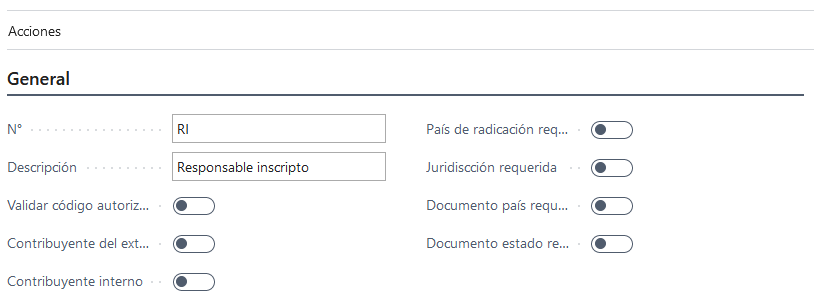
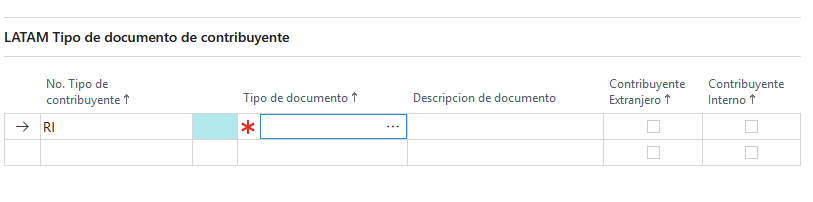

LATAM Tipo contribuyente

Descripción
De acuerdo a nuestra legislación, los contribuyentes pueden adoptar diferentes condiciones impositivas frente al fisco. Por ejemplo, Responsable Inscripto, Exento, Sujeto del exterior, etc. Es por ello que se requiere un maestro, donde se puedan dar de alta todos los tipos de documento válidos para identificar a todos los sujetos con los que realiza operaciones la compañía (clientes, proveedores, empleados, e incluso a la propia compañía).
Sección general

Campos
No.
Descripción: Identificador único de tipo contribuyente.
Tipo:Code
Descripción.
Descripción: Breve descripción.
Tipo:Text
Validar código autorización proveedor
Descripción: Solo tiene validez si esta clase de contribuyente se usa con un proveedor. Este flag indica que los documentos de este proveedor (factura, notas de crédito) van a requerir un CA al momento de ser cargados.
Tipo:Boolean
Contribuyente exterior
Descripción: Indica que es un contribuyente del exterior. Este flag impacta en los documentos a los cuales tiene acceso en la sección tipo documento contribuyente. Si este flag esta en
trueentonces el lookup solo mostrará documentos que tengan el flag Tipo documento exterior entrue.
Por ejemplo puede darse de alta PERSONA FISICA DEL EXTERIOR, PERSONA JURIDICA DEL EXTERIOR, y en ambos debería el usuario marcar la opción Exterior (SI / NO). El campo Exterior va a ser utilizado en el maestro país para filtrar que opciones de Tipo Contribuyente se muestran o admiten al seleccionar para dicho maestro. Si el país está configurado como Exterior = SI solo se mostraran en el look-up los Tipo Contribuyente que tienen configurado Exterior = Si. Y si el país está configurado como Exterior = No solo se mostraran en el look-up los Tipo Contribuyente que tienen configurado Exterior = No.Tipo:Boolean
Contribuyente interno
Descripción: permite configurar un Tipo de Contribuyente Interno, que no represente un cliente o proveedor real. Todas las transacciones realizadas por proveedores o clientes que posean este Tipo en su maestro, no deberían informarse en lo archivos magnéticos y Libros de IVA.
Tipo:Boolean
País de radicación requerido
Descripción: Para toda entidad que use una clase de contribuyente que tenga este flag en
truehace que el campo país de radicación sea requerido. Por ejemplo en país de radicación del cliente.Tipo:Boolean
Jurisdicción requerida
Descripción: Para toda entidad que use una clase de contribuyente que tenga este flag en
truehace que el Inscripto en jurisdicción sea requerido. Por ejemplo en Inscripto en jurisdicción del cliente. Tipo:BooleanDocumento país requerido
Descripción: Para toda entidad que use una clase de contribuyente que tenga este flag en
truehace que los campos N° documento país y Tipo documento país sean requerido. Por ejemplo en la extension del cliente.Tipo:Boolean
Documento estado requerido
Descripción: Para toda entidad que use una clase de contribuyente que tenga este flag en
truehace que los campos N° documento estado y Tipo documento estado sean requerido. Por ejemplo en la extension del cliente.Tipo:Boolean
Sección tipo documento contribuyente
 Se cargan los tipos de documentos que va a tener acceso el tipo de contribuyente que se esta dando de alta.
Campos
Tipo documento
Descripción: Id de tipo de documento
Tipo:Code
Descripción
Descripción: descripción del tipo de documento.
Tipo:text
Reglas en general:
Si el Tipo Contribuyente no es Interno y no es del Exterior entonces:
-
País de radicación obligatorio debe ser
true. Independientemente de esto, deberá poder ser configurable a nivel de usuario. -
Jurisdicción inscripta obligatorio debe ser
true. Independientemente de esto, deberá poder ser configurable a nivel de usuario. -
Número identificación país obligatorio debe ser
true. Independientemente de esto, deberá poder ser configurable a nivel de usuario. -
Número identificación estado obligatorio debe ser
true. Independientemente de esto, deberá poder ser configurable a nivel de usuario. -
Valida CAI Proveedor puede ser
trueofalse
Si el Tipo contribuyente es Interno entonces:
-
Exterior debe ser
false -
País de radicación obligatorio debe ser
false. Independientemente de esto, deberá poder ser configurable a nivel de usuario. -
Jurisdicción inscripta obligatorio debe ser
false. Independientemente de esto, deberá poder ser configurable a nivel de usuario. -
Número identificación país obligatorio debe ser
false. Independientemente de esto, deberá poder ser configurable a nivel de usuario. -
Número identificación estado obligatorio debe ser
false. Independientemente de esto, deberá poder ser configurable a nivel de usuario. -
Valida CAI Proveedor debe ser
false
Si el Tipo contribuyente es del exterior entonces:
-
Interno debe ser
false -
País de radicación obligatorio debe ser
true. Independientemente de esto, deberá poder ser configurable a nivel de usuario. -
Jurisdicción inscripta obligatorio puede ser
trueofalse. Independientemente de esto, deberá poder ser configurable a nivel de usuario. -
Número identificación país obligatorio puede ser
trueofalse. Independientemente de esto, deberá poder ser configurable a nivel de usuario. -
Número identificación estado obligatorio puede ser
trueofalse(Si estruedebe sertrueel de País). Independientemente de esto, deberá poder ser configurable a nivel de usuario. -
Valida CAI Proveedor debe ser
false